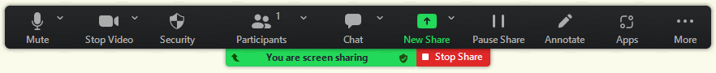

NOTE: If you see that JW Library is playing a song but you don’t hear any audio, refer to steps #4-5 as you may not have adjusted the Master or Media volumes correctly on the mixer.
Screen Sharing
Make sure the Media volume on the audio mixer is at an appropriate level. Once the appropriate media has been clicked and is playing, quickly press the
START SHARE key.
You should see on the top of your Zoom screen (top monitor) the screen share control bar indicating that you are sharing your screen:

If the video is working but no audio is being heard by Zoom participants, click on … More at the far right of the Share Screen Control bar. Then click on Optimize for video clip.
This should start to broadcast audio to Zoom participants.
If the
START SHARE key is not working, either use ALT+S to launch the share screen menu, or use the mouse to click on Share Screen. Select ‘Screen 3’ and make sure ‘Optimize for video clip’ is checked, then click ‘Share’.
If the JW Library media you are trying to play is paused, press the
JW LIB PLAY/PAUSE key to start the video OR click the play/pause button on the screen.
Zoom Participant-Single
To show a Zoom participant on the stage monitors:
1) Right-click on the participant you’d like to show and click Spotlight for Everyone
2) Press the
DISPLAY ZOOM key
To stop showing a Zoom participant on the stage monitors:
1) Press the
DISPLAY JW LIBRARY key
2) Right-click on the participant you were Spotlighting and click Remove Spotlight
Zoom Participant-Dual
To show 2 Side-by-Side Zoom participants on the stage monitors:
1) Right-click on the first participant you’d like to show and click Spotlight for Everyone
2) Right-click on the second participant you’d like to show and click Add Spotlight
3) Press the
DISPLAY ZOOM key
To stop showing dual Zoom participants on the stage monitors:
1) Press the
DISPLAY JW LIBRARY key
2) Right-click on the first participant you were Spotlighting and click Remove Spotlight
3) Right-click on the second participant you were Spotlighting and click Remove Spotlight
Zoom Participant w/JW Library Media to display
To show Zoom participant along w/JW Library media on the stage monitors:
1) Right-click on the participant you’d like to show and click Spotlight for Everyone
2) Press the
DISPLAY ZOOM key
3) Once their part calls for media press the
START REMOTE JW LIB key which will display JW
Library along with the Zoom participant on the stage monitor
To Stop the JW Library media from being displayed on the stage monitors:
1) Once the media is done press the
STOP REMOTE JW LIB key which will go back to displaying the Zoom participant on the stage monitors
To stop showing Zoom participant on the stage monitors:
1) Press the
DISPLAY JW LIBRARY key
2) Right-click on the participant you were Spotlighting and click Remove Spotlight
Zoom Participant w/OnlyM Media to display
To show Zoom participant along w/OnlyM media on the stage monitors:
1) Right-click on the participant you’d like to show and click Spotlight for Everyone
2) Press the
DISPLAY ZOOM key
3) Once their part calls for media press the
START REMOTE ONLY M key which will display JW Library along with the Zoom participant on the stage monitor
To Stop the OnlyM media from being displayed on the stage monitors:
1) Once the media is done press the
STOP REMOTE ONLY M key which will go back to displaying the Zoom participant on the stage monitors
To stop showing Zoom participant on the stage monitors:
1) Press the
DISPLAY JW LIBRARY key
2) Right-click on the participant you were Spotlighting and click Remove Spotlight